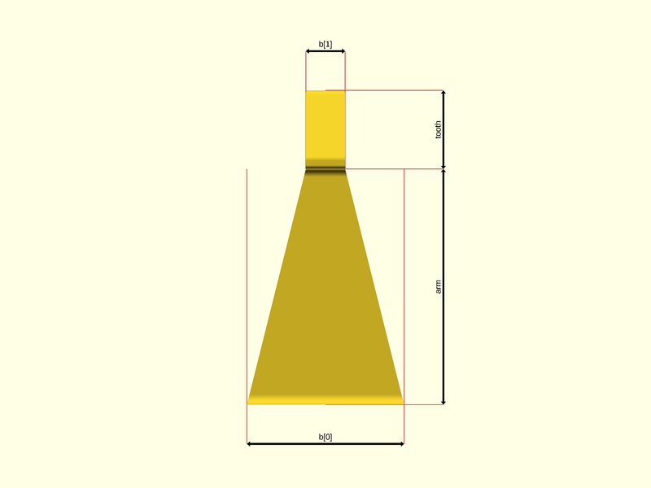
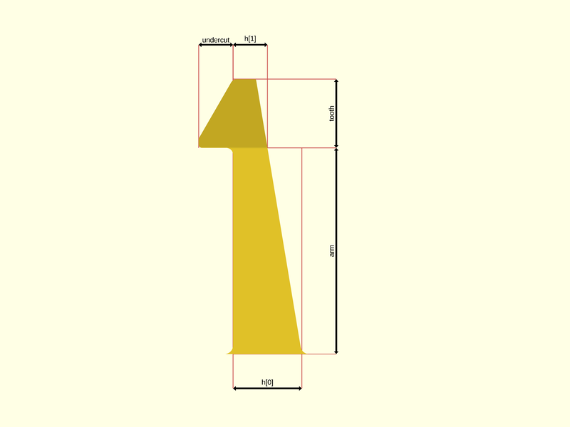
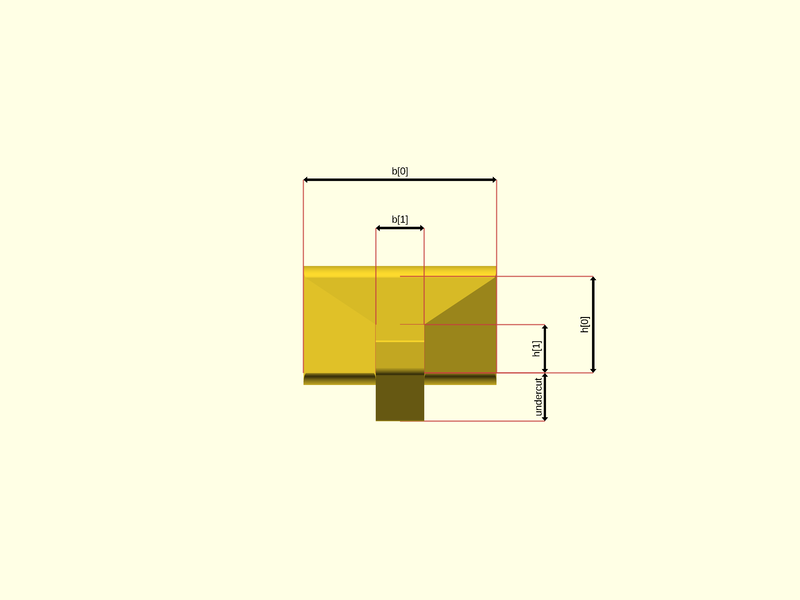

package artifacts/joints
Dependencies
graph LR
A1[artifacts/joints] --o|include| A2[foundation/dimensions]
A1 --o|include| A3[foundation/label]
A1 --o|use| A4[foundation/3d-engine]
A1 --o|use| A5[foundation/bbox-engine]
A1 --o|use| A6[foundation/fillet]Snap-fit joints, for 'how to' about snap-fit joint 3d printing, see also How do you design snap-fit joints for 3D printing?
This file is part of the 'OpenSCAD Foundation Library' (OFL) project.
Copyright © 2021, Giampiero Gabbiani giampiero@gabbiani.org
SPDX-License-Identifier: GPL-3.0-or-later
Variables
variable FL_JNT_CANTILEVER_NS
Default:
str(FL_JNT_NS,"/cantilever")
namespace for cantilever attributes: jnt/cantilever
variable FL_JNT_INVENTORY
Default:
[]
package inventory as a list of pre-defined and ready-to-use 'objects'
variable FL_JNT_NS
Default:
"jnt"
prefix used for namespacing
variable FL_JNT_RECT_NS
Default:
str(FL_JNT_CANTILEVER_NS,"/rect")
namespace for rectangular cantilever attributes: jnt/cantilever/rect
variable FL_JNT_RING_NS
Default:
str(FL_JNT_CANTILEVER_NS,"/ring")
namespace for ring cantilever attributes: jnt/cantilever/ring
variable FL_JNT_SECTION_NS
Default:
str(FL_JNT_CANTILEVER_NS,"/section")
namespace for cantilever section attributes: jnt/cantilever/section
Functions
function RadiusPoint
Syntax:
function fl_jnt_RectCantilever
Syntax:
Creates a cantilever snap-fit joint with rectangle cross-section.
The following pictures show the relations between the passed parameters and the object geometry:
FRONT VIEW:

RIGHT VIEW:

TOP VIEW

Parameters:
description
optional description
arm
arm length
tooth
tooth length
h
thickness in scalar or [root,end] form. Scalar value means constant thickness.
b
width in scalar or [root,end] form. Scalar value means constant width.
alpha
angle of inclination for the tooth
function fl_jnt_RingCantilever
Syntax:
Parameters:
description
optional description
arm_l
arm length
tooth_l
tooth length: automatically calculated according to «alpha» angle if undef
h
thickness in scalar or [root,end] form. Scalar value means constant thickness.
theta
angular width in scalar or [root,end] form. Scalar value means constant
angular width.
alpha
angle of inclination for the tooth
r
arm radius
function roundness
Syntax:
Modules
module fl_jnt_joint
Syntax:
fl_jnt_joint(verbs=FL_ADD,this,fillet,cut_drift=0,cut_dirs,cut_clearance=0,octant,direction)
Add a snap-fit joint.
Context variables:
| Name | Context | Description |
|---|---|---|
| $fl_thickness | Parameter | Used during FL_CUTOUT (see also fl_parm_thickness()) |
| $fl_tolerance | Parameter | Used during FL_FOOTPRINT (see fl_parm_tolerance()) |
Parameters:
verbs
supported verbs: FL_ADD, FL_ASSEMBLY, FL_BBOX, FL_DRILL, FL_FOOTPRINT, FL_LAYOUT
fillet
optional fillet radius.
- undef ⇒ auto calculated radius respecting build constrains
- 0 ⇒ no fillet
- scalar ⇒ client defined radius value
TODO: to be moved among fl_jnt_joint{} parameters since this parameter doesn't modify the object bounding box.
cut_drift
translation applied to cutout
cut_dirs
FL_CUTOUT direction list, if undef then the preferred cutout direction
attribute is used.
cut_clearance
clearance used by FL_CUTOUT
octant
when undef native positioning is used
direction
desired direction [director,rotation], native direction when undef ([+X+Y+Z])